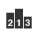

This is documentation for Orange 2.7. For the latest documentation, see Orange 3.
Rank¶
Ranking of attributes in classification or regression data sets.
Signals¶
- Inputs:
- Data
Input data set.
- Outputs:
- Reduced Data
Data set which selected attributes.
Description¶
Rank widget considers class-labeled data sets (classification or regression) and scores the attributes according to their correlation with the class.
- Attributes (rows) and their scores by different scoring methods (columns).
- Scoring techniques and their (optional) parameters.
- For scoring techniques that require discrete attributes this is the number of intervals to which continues attributes will be discretized to.
- Number of decimals used in reporting the score.
- Toggles the bar-based visualisation of the feature scores.
- Adds a score table to the current report.
Example: Attribute Ranking and Selection¶
Below we have used immediately after the File widget to reduce the set of data attribute and include only the most informative one:
Notice how the widget outputs a data set that includes only the best-scored attributes:
Example: Feature Subset Selection for Machine Learning¶
Following is a bit more complicated example. In the workflow below we first split the data into training and test set. In the upper branch the training data passes through the Rank widget to select the most informative attributes, while in the lower branch there is no feature selection. Both feature selected and original data sets are passed to its own Test Learners widget, which develops a Naive Bayes classifier and scores it on a test set.
For data sets with many features and naive Bayesian classifier feature selection, as shown above, would often yield a better predictive accuracy.